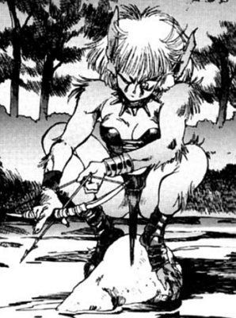
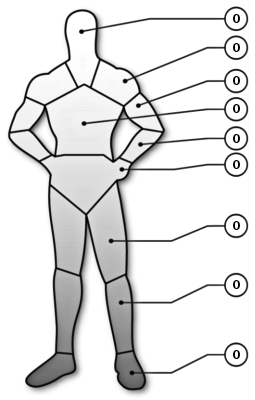

| Nom | Artemis-Alpeia | Rôle | Solo | Armure |
|  | Sexe | Age |  |
| F | <5 ? |
| Caractéristiques |
| INT | 13 |
| REF | 13 |
| TECH | 4 |
| SF | 10 |
| BT | 8 |
| CH | 5 |
| MVT | 12 |
| CON | 10 |
| EMP | 6 |
| Course | 60 m |
| Saut | 3,00 m |
| Levée | 50 kg |
 | NomEnc. |
Total0 |
| |
| Compétences[Base / Total] | [Base / Total] |
|
Capacités spéciales
Sens du combat[ 7 / ]
Constitution
Endurance[ 6 / ]
Force[ 6 / ]
Natation[ 5 / ]
Sang froid
Résister à la torture/drogues[ 7 / ]
Intelligence
Bibliothèque[ 5 / ]
Connaissance des systèmes[ 5 / ]
Education & Culture générale[ 3 / ]
Perception[ 10 / ]
Se cacher/semer[ 10 / ]
Suivre/pister[ 8 / ]
Survie en milieu hostile[ 10 / ]
|
Réflexe
Athlétisme[ 9 / ]
Escalade[ 7 / ]
Esquive[ 6 / ]
Lutte[ 8 / ]
Mêlée[ 9 / ]
Pistolet[ 4 / ]
Tir à l'arc[ 8 / ]
|
| |
| Equipement | Cybernétique |
| Inconnu | Aucune |
| |
| Background |
| Artemis is a humanoid combat bioroid hybrid, her genetic make-up is mixed with several animals and she has the appearance of a cat like woman. Alpeia (Artemis is her bioroid model name) has enhanced learning capabilities and absorbs information like a sponge. She has the ability for self replication and has three children, Artemis-Telon, Artemis-Selene and Artemis-Hecate. Hitomi by request of the Council has taken Artemis into her home and often has the unsavory job of babysitting her children. Artemis cannot speak but can make sounds and finds other ways to communicate. |